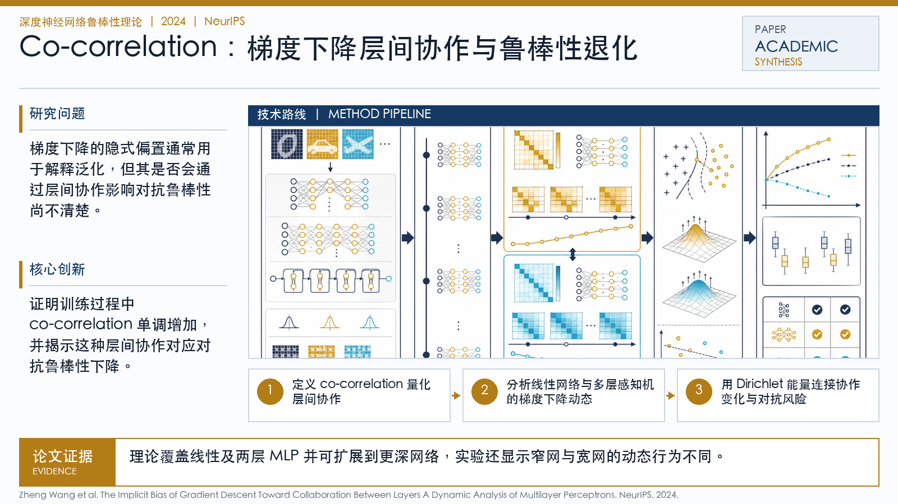

Problem
解决的问题
梯度下降的隐式偏置通常用于解释泛化，但其是否会通过层间协作影响对抗鲁棒性尚不清楚。
Robustness Theory of DNNs · 2024 · NeurIPS
The Implicit Bias of Gradient Descent Toward Collaboration Between Layers A Dynamic Analysis of Multilayer Perceptrons
Problem
梯度下降的隐式偏置通常用于解释泛化，但其是否会通过层间协作影响对抗鲁棒性尚不清楚。
Value
理论覆盖线性及两层 MLP 并可扩展到更深网络，实验还显示窄网与宽网的动态行为不同。
Paper-grounded Academic Summary
该代表页依据原文摘要、贡献段与方法图注生成。方法视觉由 ImageGen 按论文证据逐篇绘制，中文研究问题、技术路线、创新点与实验结论采用确定性排版，以保证内容与字符准确。
打开原文 PDF
Technical Route
Innovation